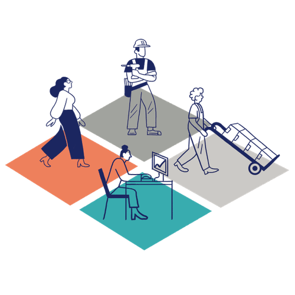

Mit der Academy erhaltet ihr im Business-Plan praxisnahe Lernmodule rund um Facilitation und wirksame Transformation.
Gemeinsam mit 9 Spaces zeigt Plan International Deutschland, wie wertebasiertes Arbeiten Orientierung gibt – nach innen wie nach außen.

Dieses Tool hilft euch, herauszufinden, welche Personengruppen ihr in eure Arbeit einbeziehen solltet.
Ein Canvas, um herauszufinden, wo ihr in eurem Unternehmen Treibhausgase emittiert
In diesem Tool werdet ihr euch eurer gesellschaftlichen Wirkung bewusst und entwickelt eine erste Idee davon, was ihr tun müsst, um sie zu erreichen.
Unser fragenbasiertes Einsteiger*innen-Tool hilft euch, euer Büro oder Homeoffice nachhaltiger zu gestalten.